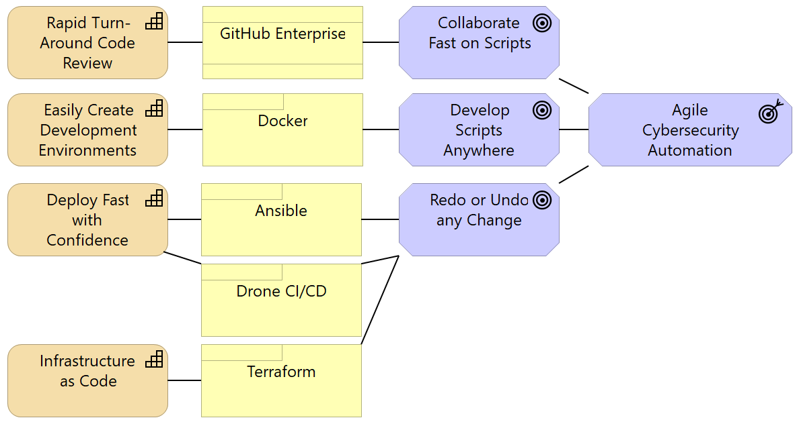

## About the Teams This team will help software development and operations teams across the University protect servers from cyber-threats and other disruptions. Keep an eye out for training events, open source recipes, scripts and playbooks from us in the future. Please also use us when you need a SecDevOps perspective toward solving a problem. --- ## Vision - Doing Cybersecurity right makes automation harder - we're here to help with that. - Automation meets needs faster if good enough cybersecurity is figured out in advance. - Support the Technology Services Next Generation Infrastructure initiative. ??? TODO: - Pictures for each tool... - Charts of how each tool connects... --- ## Agility  --- ## Tour - The Foundation: Collaboration on GitHub - --- ## Cybersecurity Liaisons Group Join the Security and Privacy Liaison Community and connect with your colleagues. Monthly online meetings: First Thursday of the month at 9:30am. Mailing List: ps-techliaisons@lists.illinois.edu Microsoft Teams: Security & Privacy Liaison Community U of I Box Folder: Security and Privacy Liaison Community: (Mailing list members will be granted access. Otherwise send email to sthomp@illinois.edu to be added.) ??? - this is a new extension of the former program. - Anyone is welcome to join - benefit from the shared expertise available in the community. --- ## Source Code - [An Python Microservice on Docker][3] - [PowerShell client for Accessing DMI Data][1] - [PowerShell client for Contacts Database][2] [3]: https://github.com/techservicesillinois/secdev-quarantinenetwork [1]: https://github.com/techservicesillinois/SecOps-PowerShell-DMI [2]: https://github.com/techservicesillinois/SecOps-PowerShell-CDB ??? - We are a new team. - Mostly talking about vaporware and dreams today, but that will change. - We have done SOME things already. --- ## Tools - [University of Illinois System Shared GitHub Service](https://web.uillinois.edu/github) - [Docker])https://www.docker.com/why-docker) - [RobotFramework](https://robotframework.org/) - [PostMan](https://www.postman.com/) - [NewMan](https://github.com/postmanlabs/newman) for PostMan command line. - [Ansible](https://www.ansible.com/) ??? - Kudos and thanks to everyone who has worked on the shared GitHub service! --- ## Q & A --- ## Bonus Slide: Why not basic auth? - Not terrific from a security perspective. Tends to carry a secret is good for a lot more than it needs to be good for. - Tends to get stale - doesn't come with great ways to rotate the keys. You could bolt this on. - Most importantly, the tech underneath is doesn't auto-update when security techniques move on. - Doesn't carry additional information like claims. - Doesn't integrate great with the tooling you might not know you want yet. i.e. API gateway integrations. --- ## Bonus Slide: OAuth and JWT --- ## OLD SLIDES FOLLOW --- ### Why Change our Script Environment? - The Goal: **Agile Cybersecurity Automation**. - The talent on this team merits a platform that can keep pace. --- ### Demo - Get a DEV copy of settings.ini. - Run the commands: ```powershell choco install docker-desktop choco install make make build make shell ``` - use `brew` instead of `choco` on Apple. - use `apt-get` instead of `choco` on Linux. --- ### What's New? - **GitHub Enterprise** provides a collaboration platform around Git that increases visibility into solutions and reduces time costs of developing solutions. - **Docker** is going to let us to each have a functioning development environment on our local laptop. This currently takes 4 commands. - **Ansible** is a good enough repeatable way to deploy Python code versioned in git to the server, and we've solved a similar need with it before within SDG. One or several pip packages is a possibility, but is not critical at this time. - **Drone CI/CD** will be setup to automatically deliver code changes to production. - **Terraform** will be critical later when we start deploying to the cloud. --- ### On the Horizon - Deliver Cybesecurity automation where we want it - i.e. Splunk. - The **Cybersecurity Team** will be asked to make changes using `git` and `pull requests`. - Adding a `pull request` does add a delay to the release cycle. The typical delay on my team has been **6 minutes**. You do *not* have to stop working while you wait. --- ### Next Week - **Cybersecurity Incident Responders** will, for now, continue to log into the production host to run the production scripts. - ***It will become possible to lose work if you make changes only on production.*** - The legacy DEV and TEST servers will eventually be less functional than the new Docker environments we are providing. - Any `master` branch in GitHub that drives a deployment pipeline will be configured to reject direct changes. You will have to use a `pull request`. --- ### What to do now? - Read `Pull Requests` that you see linked in the SecDevOps channel. - Participate in discussion in the SecDevOps channel. - Bring your scripting headaches to the SecDevOps channel. --- ### Take the Lead - Give the Docker DEV environment a try. - Read some Git resources. - Collaborate with SecDev to create your first `pull request`. --- ### Resources - [Software Carpentry Git Traininig](https://swcarpentry.github.io/git-novice/) - Diagrams were created in [Archi - Open Format](https://www.archimatetool.com/download/). See `SecOps.archimate` file for diagram source. Image was done via Snipping tool.